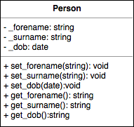
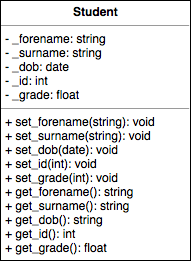

We have seen several examples of making classes. A class represents a 'thing' and that 'thing' typically has some data (member variables) associated with it and usually some methods (member functions) that perform operations on the data. Additionally, there are usually constructors that are used to create objects of that particular class.
We will now look at sub-classes which are an important aspect of object-oriented programming (OOP) and let us take advantage of the concept of inheritance.
Consider a class used to represent a person. We might have some properties such as forename, surname and date of birth. We could create accessor and mutator methods to allow us to interact with the properties. The class diagram would look something like below:
The top box contains the class name. The second block contains the member variables and their type. Note the the negative sign "-" denotes that they are private. The third box then contains the class methods, showing the arguments and return types. The positive sign "+" denotes that these are public.
Now, imagine we want to make a class to represent a student and include things like ID number and average grade on top of the usual stuff like name and date of birth.
We can immediately see that there are a lot of similarities. That's good, we can just copy-paste our Person class code and use it as a starting point to create our Student class. Well actually, we can do something cleverer than that. We can make our Student class a sub-class of our Person class and inherit its (public) member methods and variables.
The code for the Person class is shown below.
Person.h
1 2 3 4 5 6 7 8 9 10 11 12 13 14 15 16 17 18 19 20 21 22 23 24 25 26 27 28 29 30 31 32 33 34 35 |
#ifndef PERSON_H #define PERSON_H #include <string> // class enums for hair colour and month enum class Month { Jan, Feb, Mar, Apr, May, Jun, Jul, Aug, Sep, Oct, Nov, Dec }; // POD struct to hold date of birth struct Date { int day; Month month; int year; }; class Person { public: // constructors Person(); Person(std::string forename, std::string surname, Date dob); // mutators void set_forename(std::string forename); void set_surname(std::string surname); void set_dob(Date dob); // accessors std::string get_forename(); std::string get_surname(); std::string get_dob(); private: std::string _forename; std::string _surname; Date _dob; }; #endif |
Note that C++ does not have a datatype for storing dates and so we create one using a struct. We also use an enum class to create the months of the year. We include a default constructor, as well as one that allows us to specify the properties when we create the Person object.
Person.cpp
1 2 3 4 5 6 7 8 9 10 11 12 13 14 15 16 17 18 19 20 21 22 23 24 25 26 27 28 29 30 31 32 33 34 35 36 37 38 39 40 41 42 43 44 45 46 |
#include "Person.h" // list initialisation in constructor ('default' values) Person::Person() : _forename("John"), _surname("Doe"), _dob({1, Month::Jan, 1900}) {} // alternatively, initialise class members using constructor arguments Person::Person(std::string forename, std::string surname, Date dob) : _forename(forename), _surname(surname), _dob(dob) {} // mutators void Person::set_forename(std::string forename) { _forename = forename; } void Person::set_surname(std::string surname) { _surname = surname; } void Person::set_dob(Date dob) { _dob = dob; } // accessors std::string Person::get_forename() { return _forename; } std::string Person::get_surname() { return _surname; } std::string Person::get_dob() { std::string day = std::to_string(_dob.day); std::string year = std::to_string(_dob.year); if (_dob.month == Month::Jan) { return day + "/01/" + year; } else if (_dob.month == Month::Feb) { return day + "/02/" + year; } else if (_dob.month == Month::Mar) { return day + "/03/" + year; } else if (_dob.month == Month::Apr) { return day + "/04/" + year; } else if (_dob.month == Month::May) { return day + "/05/" + year; } else if (_dob.month == Month::Jun) { return day + "/06/" + year; } else if (_dob.month == Month::Jul) { return day + "/07/" + year; } else if (_dob.month == Month::Aug) { return day + "/08/" + year; } else if (_dob.month == Month::Sep) { return day + "/09/" + year; } else if (_dob.month == Month::Oct) { return day + "/10/" + year; } else if (_dob.month == Month::Nov) { return day + "/11/" + year; } else { return day + "/12/" + year; } } |
Note the get_dob() function. This simply converts the date of birth (in our custom type Date) and return a string in the format dd/mm/yyyy.
When creating our student class, we just need to tell it to inherit from our Person class in the class definition. Note the use of the public keyword.
Student.h
1 2 3 4 5 6 7 8 9 10 11 12 13 14 15 16 17 18 19 20 21 22 23 24 |
#ifndef STUDENT_H #define STUDENT_H #include <string> #include "Person.h" class Student : public Person { public: // constructors Student(); Student(std::string forename, std::string surname, Date dob, int id, float grade); // mutators void set_id(int club); void set_grade(float _grade); // accessors int get_id(); float get_grade(); private: // private member variables int _id; float _grade; }; |
Student.cpp
1 2 3 4 5 6 7 8 9 10 11 12 13 14 15 |
#include "Student.h" // constructors (default) Student::Student() : Person(), _id{0}, _grade{0.00} {} // constructor (user-specified) Student::Student(std::string forename, std::string surname, Date dob, int id, float grade) : Person{forename, surname, dob}, _id{id}, _grade{grade} {} // mutators void Student::set_id(int id) { _id = id; } void Student::set_grade(float grade) { _grade = grade; } // accessors int Student::get_id() { return _id; } float Student::get_grade() { return _grade; } |
Since we have made Student a sub-class of Person, we do not have to both implementing the code for the forename, surname and date of birth. We can just add in our extra properties and associated accessors and mutators (ID and average grade). Note that we need to include the Person.h file in our Student class header. Also, pay particular attention to the Student constructor, here we call the default constructor of the Person class. We could have also created a specific Person object here with different properties if we wished.
The code below shows an example of using these two classes.
main.cpp
1 2 3 4 5 6 7 8 9 10 11 12 13 14 15 16 17 18 19 20 21 22 23 24 25 26 27 28 29 30 31 |
#include <iostream> #include "Person.h" #include "Student.h" int main() { // create a 'default' Person object Person person; // default person is called 'John' std::cout << person.get_forename() << std::endl; // we can assign all the object properties using a initialiser list person = {"Peter", "Rabbit", {17, Month::Apr, 1947}}; // person is now called 'Peter' std::cout << person.get_forename() << std::endl; // can also create a specific person using the constructor Person another_person("Jane", "Smith", {23, Month::May, 1999}); std::cout << another_person.get_forename() << " was born on " << another_person.get_dob() << std::endl; // Now create a student object Student student; // default student is called 'John' like the person std::cout << student.get_forename() << std::endl; // now we'll assign a profile to the student using a list student = {"Albert", "Einstein", {14, Month::Mar, 1879}, 201123456, 99.9}; std::cout << student.get_forename() << " has an average of " << student.get_grade() << "\%. Wow! What a genius!\n"; return 0; } |
This code does several things. First we create a 'default' person which will pick up the default values for the forename, surname and date of birth. We then show how we can use an initialiser list to set all of the properties for the person object. Using initialiser lists like this is a C++11 language feature and a C++11 (or newer) compiler must be used. We then create a specific person using the constructor with arguments. Lastly we create a default student object and then assign values to it using a initialiser list.
The output of the code is as below:
John Peter Jane was born on 23/05/1999 John Albert has an average of 99.9%. Wow! What a genius!